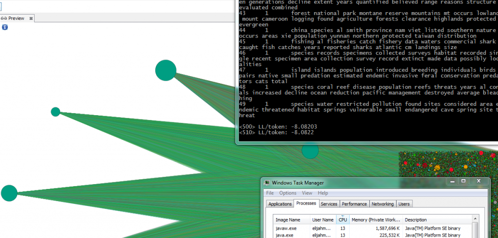

The digital humanities needs more multithreaded applications.
Originally published at Digital Humanities Specialist. This edition preserves the original text and historical context.

The digital humanities needs more multithreaded applications.